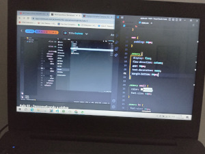

17 de Maio de 2023
Aula 02 - Utilização do HTMl e CSS no Projeto

A aula 2 do NLW foi sensacional, vimos como conectar o arquivo HTMl
com o CSS para podermos estilizar o projeto, conhecemos o conceito de
box-size, felxbox, e vimos também como utilizar a estilização
margin e padding.